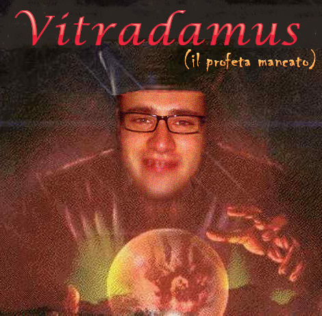

Quella che vi sto per raccontare è una storia vera, narra di un ragazzo che più ragazzo non è, e dei suoi sogni infranti alla ricerca del successo mai trovato.
La sua nuova vita fantacalcistica ricomincia lo scorso anno. Decidendo di riprovarci dopo i fallimenti economici e societari di cinque anni prima.
Ha ricominciato con grandi sogni e ambizioni: voleva essere il Re incontrastato, ma alla fine la dura realtà si palesò. Da Re a suddito, com'era giusto che fosse.

Nonostante la natura avesse stabilito - una volta per tutte - quale fosse l'ordine naturale delle cose, decise di non arrendersi e darsi alle profezie, cercando di pronosticare gli esiti della domenica successiva. Pur di vincere decise di darsi al mistico, ma anche in questo caso gli esiti furuno catastrofici, senza precedenti. Da qui, che nacque la figura - quasi mitologica - di Vitradamus: il profeta mancato.

Non contento, quest'anno ha voluto riprovarci. Convinto che l'emulare il suo Re, seguendolo in palestra, fosse più che sufficiente per battaerlo. L'illusione era tale da convicerlo ad intrapredendere una nuova carrieta da attore "come son figo, mi sto facendo il fisichello, posso provarci. Vincerò l'oscar,, ne sono sicuro!"
Ma i suoi sogni, per l'ennesima volta, si rivelarono irragiungibili e dovette cedere il passo alla cruda realtà: da attore a bibitaro...
... di acqua...fresca.
Questa, ripeto, è una storia vera. Riguarda un ragazzo, i suoi sogni infranti e i suoi infiniti fallimenti. Quale sarà il prossimo capitolo di questa storia molto triste? Solo il tempo ce lo dirà!
UN PO' DI CONTESTO PER IL 2021
Come scommessa avevamo stabilito che in caso di mia vittoria avrei potuto scegliere
in quali serate non fargli bere alcolici.
Arrivati al posticipo serale, l'unica speranza che aveva di non pagare pegno era che il suo attaccante
di punta, Acquafresca, segnasse almeno 2 goal.
Goal che ovviamente non fece e quindi fu condannato a bere solo Acqua...fresca :D.
P.S: Ovviamente non pagò pegno nemmeno questa volta!!!
Le puntate precedenti, le potete trovare qui